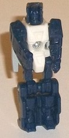
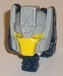
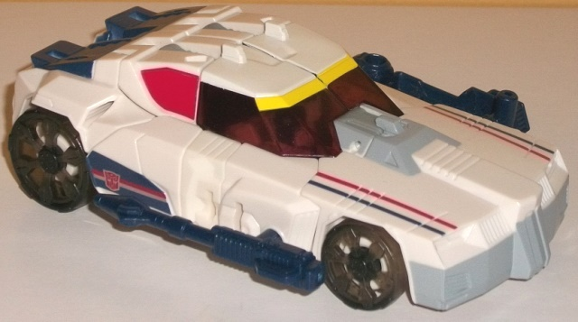
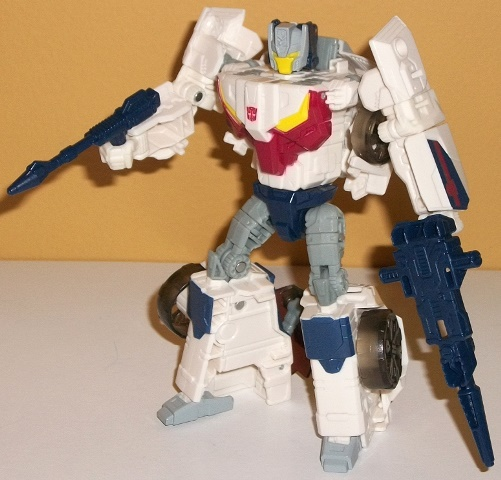

Allegiances
: Autobot
Size
: Deluxe
Difficulty of Transformation
: Easy
Color Scheme
: White, dark dull navy
blue, light pale bluish gray, and some yellow, dark brick red, transparent
pale red, clear tinted plastic, and red
Rating
: 9.1
(NOTE: Because this is a repaint, this is not a full-blown review. This mainly covers any changes made to the mold and the color scheme, and merely compares it to Titans Return Chromedome w/ Stylor. For a review on the mold itself, read the review of Titans Return Chromedome w/ Stylor here .)


Throttle, like Breakaway,
is a remold of Chromedome w/ Stylor-- which means that the Titan Master's
robot mode is, once again, the same as
Hyperdrive's
.
The white body with dark navy blue appendages and head looks better than
Stylor, but without any paint he's still inferior to Hyperdrive in robot
mode, that's for sure. The one remold made to the toy is the new face on
Throttle, which is Getaway's (yes, Breakaway is the trademark-friendly
name for Getaway), and is based heavily on his appearance in the IDW comics.
He's got a nice angled faceplate, triangular side antennae, and some nice
detail on his forehead crest, with even a little gear molded in there near
the top-- quite impressive. Unfortunately, although the bluish gray paint
on the helmet and the yellow on the faceplate look good, his eyes are ALSO
yellow, which makes them blend in with the faceplate too easily-- his eyes
really needed to be blue or something.


As for Breakaway/Getaway
proper, his color scheme is, predictably, based heavily on his G1 toy.
He's mostly white and dark navy blue, which is accurate to the G1 toy,
but there's some light pale bluish gray visible in his robot mode, which
is a new shade added to the character. Although I'm not usually all that
fond of grays, the "bluish" shade of this gray helps tie it in with both
the dark blue and the white, while also contrasting nicely against both.
His windows are a transparent pale red, though the painted red windows
near the back of his vehicle mode are a more "straightforward" red, which
is a rather odd mismatch-- the red should've been duller or the transparent
red brighter to help even things out. Again, as with the G1 toy, there's
some more dark dull blue on the back end of the car mode, as well as on
his guns, there's a nice big gray paint app on his front bumper, and there's
red and blue stripes painted on his front hood (though the stripes were
on the sides of the car in G1-- there's small foil stickers on the sides
that partially replicate this, but because of the makeup of the toy stripes
all along the sides would be pretty difficult). His wheels are a tinted
clear plastic, which looks a bit odd, but given that Chromedome's wheels
were also transparent, it would make sense they're transparent here as
well. In robot mode, in an attempt to mimic his G1 transformation, he's
got dark blue details on his knees meant to mimic the original's dark blue
spoiler, and the details on his chest are painted quite nicely with dark
red and yellow to emulate the front bumper of the car (even though the
front bumper is actually gray, but comparing it to the G1 toy the front
window on the chest, so there's that-- as well as headlight paint apps).
However, particularly in robot mode is where it's just too obvious Getaway
is a redeco of Chromedome with a new head and not enough of his "own toy".
Yes, the G1 toy was a futuristic car as well, but it had a spoiler in vehicle
mode, and in robot mode there were long door-wings on the shoulders, which
were a major part of his silhouette. The thick, white arms that have no
paint on them (just the foil stickers on the sides), along with the white
on the legs, definitely doesn't emulate G1 Getaway all that closely in
robot mode. Granted, in many aspects it is "close enough" beyond the shoulders
(or at least some kind of "upper back crest"), but a dedicated mold definitely
would've been better suited to him.
Beyond the new face
on Throttle, no mold changes have been made to Breakaway.
Titans Return Breakway/Getaway
is a pretty darned good mold, and the new headsculpt is good (despite a
lack of identifying paint on the eyes), but overall his color scheme just
isn't as interesting as Chromedome's, with a bit too much white on his
appendages in robot mode, in particular. Since there's no other modern
Getaway update, Breakaway here does a decent enough job, but I'm missing
his trademark door wings-- it's definitely clear Chromedome was the priority
here for this mold. (Honestly, if you can find one for a decent price,
I'd recommend
TF Movie Breakaway
over this
release-- it fits him a bit better.)
Reviews by Beastbot